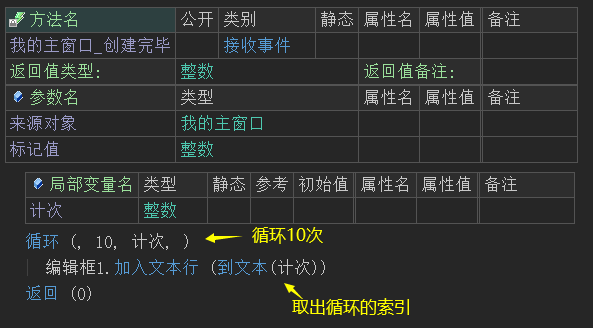
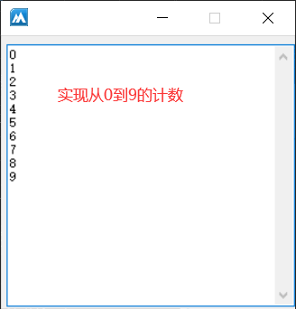
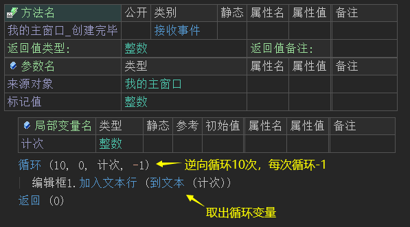
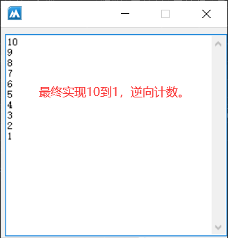
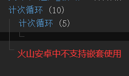
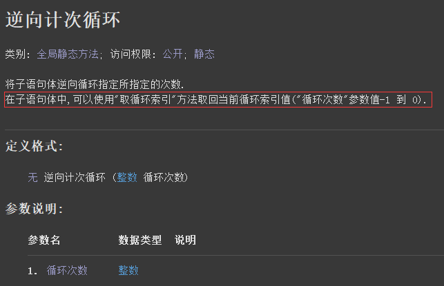
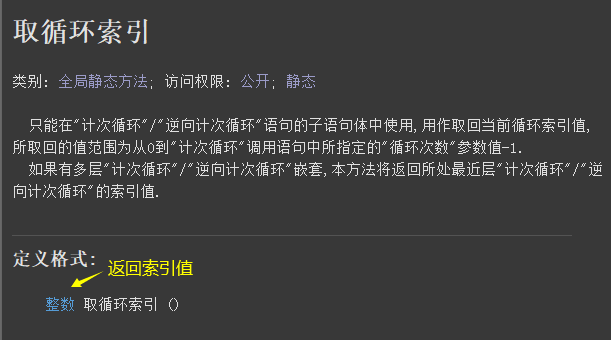

1、概述
如果想要同样的程序语句被执行多次，就需要使用循环结构语句。
在火山中提供了如下循环结构：
(1) 循环
(2) 计次循环
(3) 逆向计次循环
(4) 判断循环首/尾
(5) 判断循环
在循环结构执行时，有时需要提前结束循环。
火山提供了如下的循环控制语句：
(1) 跳出循环
(2) 到循环尾
2、循环
本语句将利用变量对循环体(本语句的子语句体)内的命令进行循环执行。
第一次执行此语句时将使用“变量起始值”参数初始化“循环变量”参数所指定的变量，每次(包括第一次)执行到此语句处都将判断循环变量内的值是否已经到达“变量目标值”参数所指定的值，如已等于或超过，则跳转到循环体的下一条语句处，否则进入循环体。
本语句共有四个参数，分别如下：
(1) 变量起始值：
定义循环变量的起始数值。
如果被省略，默认为0。
(2) 变量目标值：
定义循环变量的目标数值，在循环首部如果发现循环变量值已到达此目标值时(递增值小于0时小于等于目标值，递增值大于0时大于等于目标值)将跳出循环而不再进入循环体。
如果被省略，默认值为1。
(3) 循环变量：
本整数型变量将用作控制循环执行次数，在循环尾部将自动递增或递减该变量内的数值(由变量递增值参数决定)，在循环体中的可以直接取用此变量中的值。
如果被省略，将自动使用内部临时变量。
(4) 变量递增值：
每次执行到循环尾部时都将把此值加入到循环变量中去，此值可为正数或负数，如为正数则递增，为负数则递减。
如果被省略，默认值为1。
注意: 必须为本参数提供非0整数立即值，以便编译器建立循环结束条件。
实现正向循环计数，示例如下：
循环语句的参数1、4忽略、参数2提供要循环的数量、参数3提供循环变量，然后在其子语句体内利用循环变量实现正向计数。

最终实现从0到9的计数。

实现逆向循环计数，示例如下：
循环语句的参数1提供要循环的数量、参数2提供0、参数3提供循环变量、参数4提供-1，然后在其子语句体内利用循环变量实现逆向从10到1进行输出。

最终实现了10到1的逆向计数。

利用其循环变量的特性，还可以实现循环正/逆向取出数组成员内容，如下：
(1) 实现正向遍历数组成员，示例如下：
循环语句的参数1、4忽略、参数2提供数组成员数、参数3提供循环变量，就可实现正向遍历输出数组成员。
最终数组所有成员将被输出到编辑框中显示。
(2) 实现逆向遍历数组成员，示例如下：
循环语句的参数1提供数组成员数、参数2提供0、参数3提供循环变量、参数4提供-1，就可实现逆向遍历输出数组成员。
最终数组所有成员将被逆向输出到编辑框中显示。


3、计次循环
本语句只有一个参数，用于提供子语句体要循环的次数。
本语句相当于“循环”语句的精简版，但只提供正向循环，在本语句的子语句体内利用“取循环索引()”方法就可以很方便的取出被循环的索引值。
利用本语句循环10次，取出循环索引到编辑框中。
最终循环索引会依次显示在编辑框中。
注：本语句在火山安卓中不支持嵌套使用，如下图所示：



4、逆向计次循环
本语句只有一个参数，用于提供子语句体要循环的次数。
本语句相当于“循环”语句的精简版，但只提供逆向循环，在本语句的子语句体内利用“取循环索引()”方法就可以很方便的取出被循环的索引值。

利用本语句逆向循环10次，取出循环索引到编辑框中。
最终循环索引会逆向依次显示在编辑框中。
注：本语句在火山安卓中不支持嵌套使用，如下图所示：


5、取循环索引
本方法只能用于“计次循环”或“逆向计次循环”的子语句体中使用，用于取出循环索引值。

注1：务必保证本方法位于子语句体内，如下图所示是错误的：
注2：如果有多层循环嵌套，本方法只能取出最近层循环的索引值，无法取出其它循环层的循环索引。
如下图所示的嵌套循环，其中“取循环索引()”方法取出的索引值为“计次循环(2)”的。


6、循环判断首和循环判断尾
“循环判断首”和“循环判断尾”语句必须配套使用，当“循环判断首”被执行后，首先会执行其子语句体的内容，然后会根据“循环判断尾”所提供的逻辑参数决定是否继续循环执行，如果参数为真则继续循环执行，否则跳出循环。
注：因本循环语句的判断条件是在循环语句的尾部，所以本循环在使用时会至少保证循环一次。
示例：
在本语句的子语句体内对“计数”变量进行累计+1，并输出计数结果，实现正向计数效果。
最终利用本语句实现了正向计数效果。
同理，也可以实现逆向计数如下所示：
最终实现了逆向计数。


7、判断循环
本语句是先对其逻辑参数进行判断，根据其结果值（真或假）来决定是否开始循环，和“循环判断首/尾”正好相反。
示例：
在本语句的子语句体内对“计数”变量进行累计+1，并输出计数结果，实现正向计数效果。
最终利用本语句实现了正向计数效果。
同理，也可以实现逆向计数如下所示：
最终实现了逆向计数。


8、跳出循环
本命令转移当前程序执行位置到当前所处循环体尾部的下一条语句处，可用于所有循环语句。
如下图所示，当循环索引为5时执行跳出循环。
最终循环提前结束。


9、到循环尾
本命令转移当前程序执行位置到当前所处循环体的尾部。
示例：
因循环体内对“整数变量”进行了一次判断，并执行了一次“到循环尾”相当于跳过了一个循环，所以最终会输出2、3。